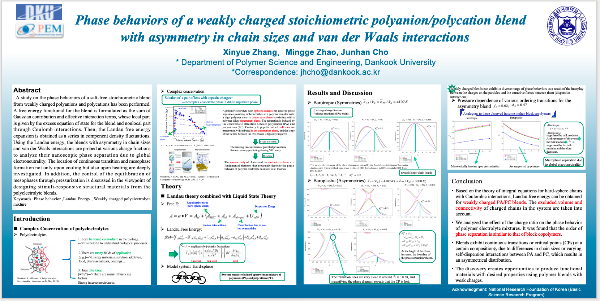
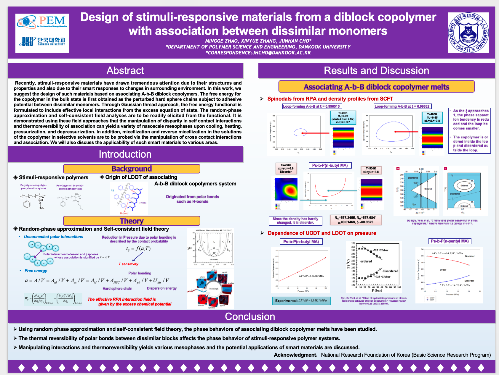
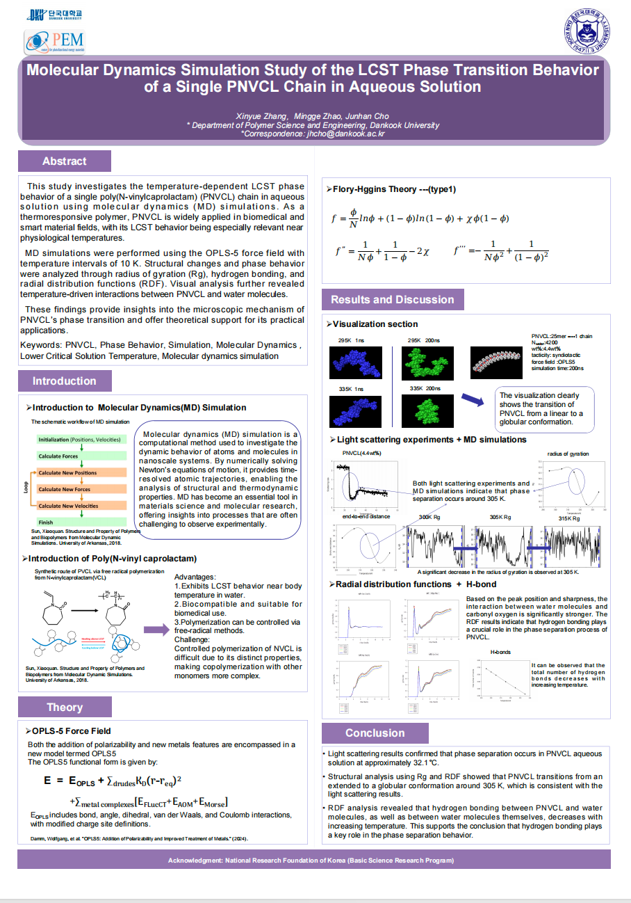
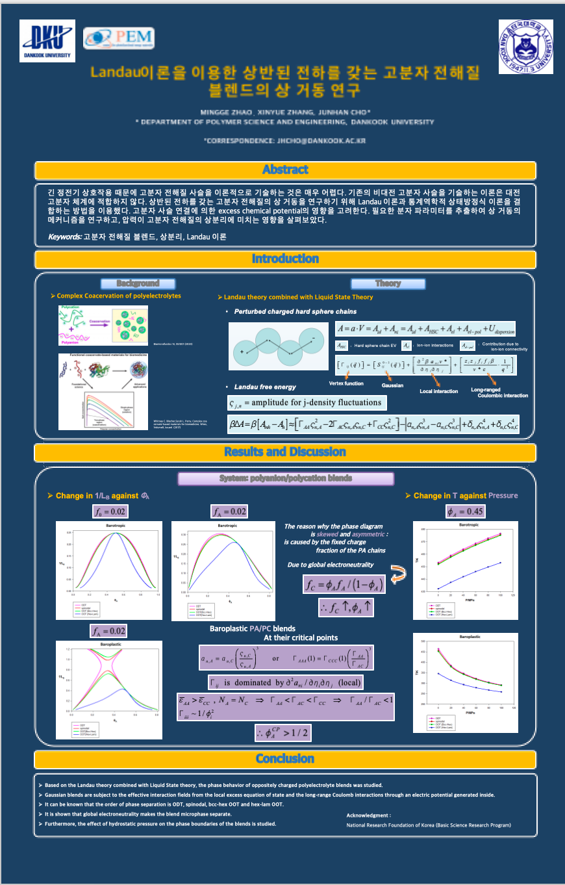

고분자학회 초록 등록 및 포스터 발표 준비
이 페이지는 고분자학회 초록 등록, 포스터 발표 준비, 학회 참석 시 주의사항을 정리한 문서입니다.
1. 학회 일정 확인
고분자학회는 보통 1년에 두 번 개최됩니다.
- 춘계 학회
- 추계 학회
!!! warning "주의" 초록 제출 마감일, 사전등록 마감일, 포스터 발표 일정은 매년 다르므로 반드시 학회 홈페이지에서 확인해야 합니다.
2. 자주 참석하는 학회
| 구분 | 학회명 | 비고 |
|---|---|---|
| 국내 | 한국고분자학회 | 초록 등록 및 포스터 발표 |
| 해외 | APS March Meeting | 발표 분야 확인 필요 |
| 국내/전문 | 고분자물리 관련 학회 | 연구 주제에 따라 참석 |
3. 초록 등록 전 준비물
초록 등록 전에 아래 내용을 먼저 준비합니다.
- 논문/연구 제목
- 저자 정보
- 소속 정보
- 발표자 정보
- 초록 본문
- 발표 분야
- 발표 구분: 포스터 또는 구두발표
- 회원 가입 및 회비 납부 여부 확인
!!! note "회원비" 학회 등록 전에 회원비 납부가 필요한 경우가 있으므로, 등록 전에 반드시 확인합니다.
4. 초록 등록 방법
4.1 발표 분야 선택
초록 등록 시 특별 발표분야는 보통 선택하지 않습니다.
| 항목 | 선택 내용 |
|---|---|
| 특별 발표분야 | 선택하지 않음 |
| 발표 분야 | 기조강연/일반발표/부문위원회 |
| 세부 분야 | 고분자구조 및 물성 |
4.2 발표 구분 선택
| 항목 | 선택 내용 |
|---|---|
| 발표 구분 | 포스터 발표 |
| 발표 장소 | 포스터 |
4.3 저자 정보 입력
저자 정보는 다음 순서로 입력합니다.
- 발표자 입력
- 공동저자 입력
- 지도교수님 정보 확인
- 소속 정보 확인
- 이메일 확인
!!! warning "주의" 저자 순서와 소속 정보는 제출 전 반드시 다시 확인합니다.
4.4 초록 입력
초록 입력 시 다음 내용을 확인합니다.
- 제목 오탈자 확인
- 저자명 확인
- 소속 확인
- 초록 본문 길이 확인
- 특수문자, 위첨자, 아래첨자 깨짐 확인
4.5 등록하기
모든 정보를 입력한 후 등록하기 버튼을 클릭합니다.
등록 완료 후에는 다음 사항을 확인합니다.
- 접수번호
- 발표 분야
- 발표 구분
- 발표자 정보
- 초록 PDF 또는 확인 페이지 저장
!!! tip "추천" 등록 완료 화면은 캡처하거나 PDF로 저장해 둡니다.
5. 포스터 제작 및 출력
포스터는 학회에서 지정한 크기와 형식에 맞추어 제작합니다.
| 항목 | 내용 |
|---|---|
| 출력 재질 | 천 포스터 추천 |
| 준비물 | 포스터, 압정, 테이프 |
| 확인 사항 | 제목, 저자, 소속, 그림 해상도 |
!!! note "포스터 재질" 학회 참석 시 이동과 보관이 편리하도록 천 포스터로 출력하는 것이 좋습니다.
6. 학회 참석 시 준비물
학회 참석 전에 아래 물품을 준비합니다.
- 포스터
- 압정 또는 핀
- 테이프
- 명찰
- 노트북 또는 태블릿
- 발표 자료 백업 파일
- 교통편 및 숙소 정보
!!! warning "포스터 부착" 포스터를 고정하기 위해 압정이나 테이프가 필요한 경우가 있으므로 미리 준비합니다.
7. 사진 예시
아래에는 초록 등록 화면, 발표 분야 선택 화면, 포스터 예시 등을 추가합니다.
7.1 APS 예시


7.2 고분자학회 예시


8. 발표자료 예시 파일
아래 파일은 초록 등록 또는 포스터/발표자료 작성 시 참고할 수 있는 예시입니다.